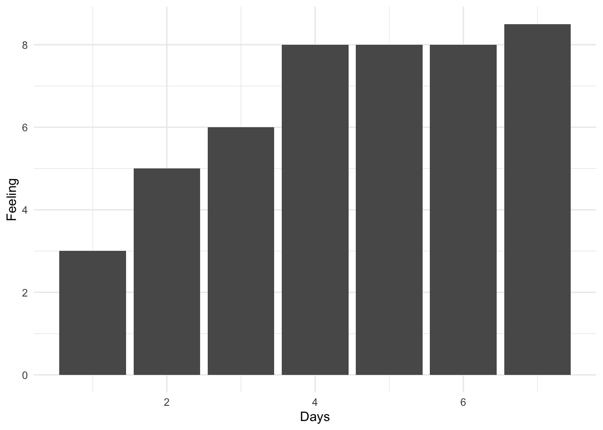

3 西貢七日
西貢作為南越舊都，在很多電影和文章裡都是以風情萬種的形象出現，民國112年6月，我借徑泰國 sec-thailand 從ChiangMai出發，在胡志明市度過了7天的時間。
3.1 總體印象
其實我對西貢的總體印象是如 Figure fig-summary 所示。 來西貢之前，這是一個被國內很多人認為是同上世紀上海相似的地方（也的確有這些感官）。 在中國國內的社群媒體和YouTube平台上基本都是用”男人天堂”、“飛車搶匪”、“按摩洗頭”等詞彙來描述西貢。 初到這個城市的時候，這裡對我來說是以革命領袖胡志明名字命名的越南社會主義民主共和國的一個大城市。 雖然多以機車🛵代步，但駕駛習慣和泰國截然不同，就像本地人常用的叫車軟體”Be”一樣，一下飛機就能充斥到”Beeeeee”的喇叭聲，充斥了7天。可以說在西貢的前兩天，我每天都在看去其他地方的機票，甚至有想買票回ChiangMai。 改變我對胡志明市印象的是它的街角和民眾。在街角喝咖啡的時候，胡志明市悄悄然的就變成了西貢。 西貢的七日，也經歷了無數被當地朋友”Make my day”的時刻。 坦誠的講，在來到越南尤其是胡志明市在小紅書上的形象大多是負面的，政府腐敗、民眾狡猾、社會落後、治安混亂。 西貢七日，再次讓我質疑中國社群媒體的”透鏡效應”，不知是中國人本身在越南的名聲不好，還是民眾的大國感，我感受到的西貢是一個比國內開放、包容的多的城市。 與我來說，它並不是一個很適合Chill的地方，但卻有很多值得享受和思考的地方。
3.2 Day1
我是民國112年6月15日下午從清邁國際機場乘坐越南廉價航空公司”越捷航空”出發的。 一個蠻有趣的細節是在清邁機場書店中看到有關中國的一本書”China in ten words”，這可能是泰國民眾在來中國之前對中國的初印象（ Figure fig-CNin10words ）。 不得不感嘆時間和形式的變化，“人民”、“領袖”、“革命”、“差距”在中國社會變得更加重要，其他的詞彙似乎已不適合描述當下的中國。
不知道越南的社會主義建設的如何呢？

在飛機上的鄰座是一個在胡志明市生活的小姐，她的描述給了我對西貢的第一印象，比清邁”貴得多”。當我借助翻譯軟體問她覺得胡志明市社會主義的氛圍怎麼樣，她非常肯定的笑著跟我說”沒多少”。

持中國護照到越南可以在提前通過淘寶購買批文後，在機場申請Landing Visa。 有趣的一點是，由於中越兩國在南中國海（越南稱東海）領土主權上的爭議，以及中國新版護照（E開頭）24頁等處印有完整版的中國地圖（也是服，明知道有爭議，就不能替出行民眾想下麼….越南政府也是有夠小肚雞腸的）。 因此在官方意義上，越南政府並不承認中國的新版護照，因此中國民眾無法申請貼紙簽，而是獲批一張單獨的簽證紙，謂之貼紙簽。 兩個社會主義BuddyBuddy之前的兄弟情義可見一斑啊。